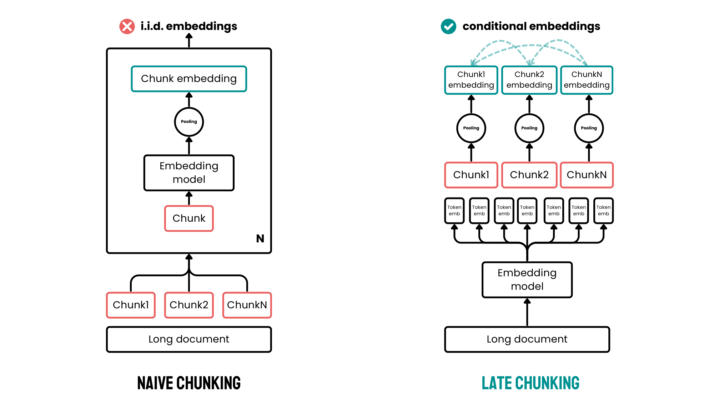
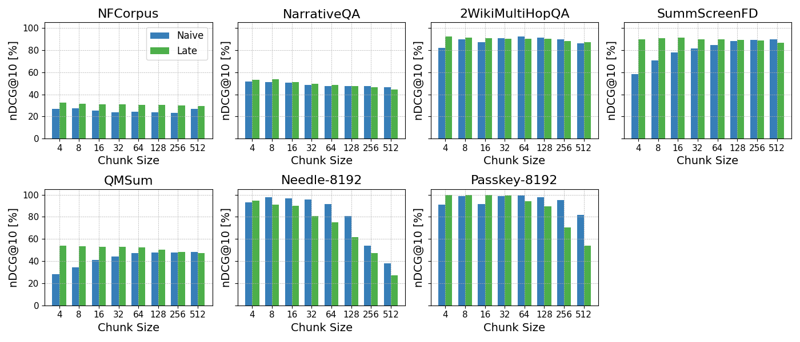
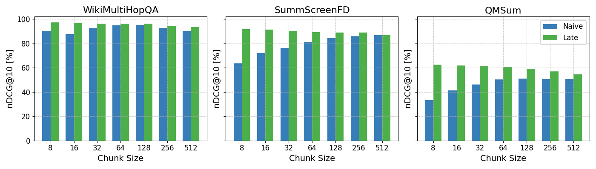

原文: arXiv:2409.04701v3（2025-07-07 更新） 说明: 本文为论文全文中文技术展开，公式/图表编号与原文一致；图片自 arXiv PDF 抽取（起始编号 fig02，Figure 1 为纯文本示意故未截图），caption 中译；数值原样保留。
Late Chunking：用长上下文嵌入模型生成带全局语境的分块向量（Late Chunking: Contextual Chunk Embeddings Using Long-Context Embedding Models）¶
作者： Michael Günther¹、Isabelle Mohr¹、Daniel James Williams²、Bo Wang¹、Han Xiao¹
单位： ¹Jina AI GmbH（Prinzessinnenstr. 19-20, 10969 Berlin, Germany）、²Weaviate B.V.（Prinsengracht 769a, 1017JZ Amsterdam）
邮箱： research@jina.ai、danny@weaviate.io
| 字段 | 值 |
|---|---|
| 发布 | arXiv:2409.04701v3（cs.CL, 2025-07-07；v1 首发 2024-09） |
| 代码 | https://github.com/jina-ai/late-chunking |
| 骨干示例 | jina-embeddings-v2-small（8192 token 上下文）、jina-embeddings-v3、nomic-embed-text-v1 |
| 训练数据（span 微调） | FEVER、TriviaQA（span 标注版，HuggingFace jinaai/fever-span-annotated、jinaai/triviaqa-span-annotated） |
| 评测 | BEIR（SciFact、NFCorpus、FiQA、TRECCOVID）、LongEmbed（NarrativeQA、2WikiMultiHopQA、SummScreenFD、QMSum、Needle-8192、Passkey-8192） |
| 模态 | 文本 |
| 语言 | 英文为主（v3/nomic 骨干支持多语） |
摘要（Abstract）¶
许多应用只需要检索文档中的较小片段，密集向量检索在较短文本上通常也更准（长文本更容易被"过度压缩"）。实践中会先把文档切成小块（chunks）再单独嵌入，但这样切出来的块丢失了周围上下文，向量质量随之下降。
作者提出 late chunking（延迟分块）：先让长上下文嵌入模型对全文所有 token 编码，再在 transformer 输出之后、mean pooling 之前按 chunk 边界做池化——因为"分块"发生在编码之后，所以取名 late。得到的 chunk 向量因此继承了全文语境，在多种检索基准上明显优于朴素分块。方法通用（适用于任何采用 mean pooling 的长上下文嵌入模型）、无需额外训练即可上线；作者还进一步给出一种针对 late chunking 的专用微调方法（span pooling），可进一步提升精度。
1 引言（Introduction）¶
神经检索（IR）依赖基于 transformer 的嵌入模型将文本编码为稠密向量，用余弦相似度做语义近似。RAG 等场景要求把文档切成有限长度的 chunk 后入库，检索时按 kNN 召回相关块喂给 LLM 生成回答；许多其它应用（段落定位、跳读导航）也同样依赖分块。
为什么长上下文模型下仍要分块？ 长上下文嵌入模型（Günther 等 2023）虽然可以整篇编码，但在短文本上表现依然更好（Zhou 等 2024，附录 A.1 有对照）——把长文压成单一向量会损失细节。因此即便有 8192 token 的模型，分块仍是主流。
但朴素分块会切断跨块语义依赖。 图 1（原文以文字呈现，此处不截图）用维基百科 Berlin 词条作例：第一句提到 "Berlin is the capital..."，后续句以 "Its" / "The city" 回指，一旦被切开，后面几个 chunk 就没有 Berlin 这一实体信息，向量质量下滑。
原文表 1 用同一嵌入模型（jina-embeddings-v2-small）对比朴素分块和 late chunking 时，chunk 与查询词 "Berlin" 的余弦相似度：
表 1（原文 Table 1）：把 "Berlin" 的向量与文章各句向量比较——Sim. Naive 为朴素分块结果，Sim. Late 为 late chunking 结果。
| 文本 | Sim. Naive | Sim. Late |
|---|---|---|
| Berlin is the capital and largest city of Germany, both by area and by population. | 0.8486 | 0.8495 |
| Its more than 3.85 million inhabitants make it the European Union's most populous city, as measured by population within city limits. | 0.7084 | 0.8249 |
| The city is also one of the states of Germany, and is the third smallest state in the country in terms of area. | 0.7535 | 0.8498 |
可见第二、第三句里没有直接出现 "Berlin"，朴素分块下的相似度只有 0.70 / 0.75；而 late chunking 因为在先整篇 encoding 时已经把 "Berlin" 的语境写进了 "Its" / "The city" 的 token 表征，相似度分别拉到 0.82 / 0.85。这是全文的核心反直觉现象：先编码后切块能自然继承全局语境，而不是靠拼接、扩窗、指令改写等外挂手段。
作者的主要贡献如下：
- Late Chunking 方法：见 §3，通用、免训练、在多项检索任务上稳定优于朴素分块；
- 超长文档扩展算法：Long Late Chunking（§3.1），处理超过模型上下文的文档；
- 专用训练方法：span pooling 微调（§3.2），进一步榨出精度；
- 系统评测：覆盖多模型、多分块策略、多数据集，同时指出方法失效场景（§4）。
2 相关工作（Related Work）¶
主流嵌入模型都遵循 Reimers & Gurevych（2019）的 SBERT 训练范式：transformer + pooling → 单一向量。mean pooling 因经验最好被广泛采用。相对位置编码（AliBi、RoPE）让 8k+ 上下文的嵌入模型成为可能（Jina-v2、Nomic-Embed）。
分块（chunking） 已成事实标准：固定 token 长度、句子/段落切分，或者更进阶的语义分块（Kamradt 2024，用邻句嵌入相似度决定切点）。
为 chunk 补上下文的现有思路：
- overlap chunk：相邻块保留一段公共 token（Safjan 2023），实际效果有限（原文附录 A.2 给出实验，见后文表 6）；
- LLM 上下文注入（Anthropic 2024 "Contextual Retrieval"）：让 LLM 读全文后生成"补充上下文"拼到 chunk 前面，再喂嵌入模型——精度好但推理成本大（每个 chunk 要额外过一次 LLM）；
- 命题化 / proposition 抽取（Luo 等 2024）：用 LM 抽命题作为检索粒度，但一段一段处理仍会丢跨段语义，也无法与任意切分策略组合。
Token 级检索（ColBERT） 采用 "late interaction"：query 与 document 的每个 token 相似度都比一遍，精度高但检索代价大（要保存所有 token 向量、要做多向量匹配）。与之相比，late chunking 依然是单向量-per-chunk，只是这些向量被赋予了全文语境。
Chen 等（2024）则试图专门训练一个能输出"上下文化句向量"的模型；本文的定位不同——架构级修改，无需重训即可套用到已有嵌入模型。
3 方法（Method）¶
Late chunking 利用了两件事的差距：新一代嵌入模型的最大上下文窗口很大（例如 jina-embeddings-v2-small 支持 8192 token，约十页正文），而实际应用中最优 chunk 大小往往很小（一段话左右）。前者是编码能力上限，后者由下游需求决定，两者不必绑死。

中文说明： 左图是朴素分块——先把长文档按 chunk 边界切成独立子串，每个子串独立过一次嵌入模型再 pooling，得到 i.i.d.（互相独立）的 chunk 向量，跨 chunk 语义完全消失。右图是 late chunking——整篇文档整体输入 transformer，产出 token 级表征序列 \(\vartheta_1, \dots, \vartheta_m\)，然后在 mean pooling 阶段按 chunk 边界分段做池化，每个 chunk 向量都"看过"全文，因此是 conditional embedding（条件嵌入）。改动只在 pooling 之前的边界应用位置——名字里的 "late" 就是指分块动作延迟到编码之后。
朴素路径可以概括为 chunk → tokenize → encode → pool per chunk；late 路径改成 tokenize whole → encode whole → pool per chunk boundary。整个算法在 Algorithm 1 中给出：
Algorithm 1（Late Chunking）
输入: 文本 T，分块策略 S
输出: chunk 向量 e_1, ..., e_n
1: (c_1, ..., c_n) ← Chunker(T, S) # 用任意分块器给出块 c_j
2: (τ_1, ..., τ_m), (o_1, ..., o_m) ← Tokenizer(T) # τ_i 为 token id, o_i 为其对应字符数
3: (ϑ_1, ..., ϑ_m) ← Model(τ_1, ..., τ_m) # 整篇编码得到 token 级向量
4: o_chunk ← 0, j ← 1, cue_start ← 1, cues ← []
5: for i ∈ {1, ..., m}:
6: o_chunk ← o_chunk + o_i
7: if o_chunk ≥ |c_j|: # 累积字符长度到达当前 chunk 边界
8: cue_end ← i
9: cues ← cues ⊕ (cue_start, cue_end)
10: j ← j + 1; cue_start ← i + 1; o_chunk ← 0
11: end if
12: end for
13: for (cue_start, cue_end)_i ∈ cues:
14: e_i ← ( Σ_{j=cue_start}^{cue_end} ϑ_j ) / ((cue_end + 1) - cue_start) # 段内 mean pool
15: end for
要点：分块器输出的是字符区间，因此 5–13 行的作用是把字符边界翻译成 token 边界（累积字符长度直到达到当前块大小）；14–16 行才是真正的按段 mean pooling。整个流程不改任何模型权重、不改任何 chunk 切分算法——只是把 pooling 阶段挪了个位置。
3.1 长文档的延迟分块（Long Late Chunking）¶
即使模型支持 8k token，也无法一次编码更长的文档；而 self-attention 显存随 token 数二次增长，硬塞会 OOM。因此作者提出 Long Late Chunking（Algorithm 2）：把整篇文档切成若干大宏块（macro chunk）\(l_\max\) 个 token 长，宏块之间有 \(\omega\) 个 token 的重叠作为额外上下文，再对每个宏块单独跑 late chunking，最后把结果拼接。
Algorithm 2（Long Late Chunking）
输入: 文本 T，分块策略 S，最大 token 长 l_max，重叠长度 ω
输出: chunk 向量 E = (e_1, e_2, ..., e_n)
1: (c_1, ..., c_n) ← Chunker(T, S)
2: (τ_1, ..., τ_m), (o_1, ..., o_m) ← Tokenizer(T)
3: if m < l_max: return LateChunking(T, S) # 短文本直接走 Algorithm 1
5: end if
6: i_end ← 1, embeddings ← []
7: while i_end < m:
8: i_start ← max(i_end - ω, 1) # 与上一段重叠 ω 个 token
9: i_end ← min(i_start + l_max, m)
10: (ϑ_{i_start}, ..., ϑ_{i_end}) ← Model(τ_{i_start}, ..., τ_{i_end})
11: if i_start == 1:
12: embeddings ← embeddings ⊕ (ϑ_{i_start}, ..., ϑ_{i_end})
13: else:
14: embeddings ← embeddings ⊕ (ϑ_{i_start+ω}, ..., ϑ_{i_end}) # 丢掉重叠区避免重复
15: end if
16: end while
17: 使用 Algorithm 1 的 4–16 步在拼好的 token 向量序列上做边界池化
思路很直接：重叠区只用于上下文补齐，不写入最终 token 序列（除首段外），避免同一 token 出现两次影响 pool。这样能把 late chunking 的"全局语境"优势平滑地推广到任意长度的文档。
3.2 面向 late chunking 的训练方法（Training Method）¶
Late chunking 本身免训练即可上线，但传统 embedding 模型的 mean pooling 是训练在"整段 → 单向量"目标下的，未必最擅长编码带周围 token 的 chunk。作者提出 span pooling 微调，让模型明确学会把"相关信息压进标注区间的 token"里。
训练数据格式： 三元组 \((q, d, \langle \text{start}, \text{end}\rangle)\)——查询 \(q\)、包含答案的文档 \(d\)，以及 \(d\) 内答案 span 的字符区间。作者从 FEVER（Thorne 等 2018）与 TriviaQA（Joshi 等 2017）构造（合计约 47 万对）：FEVER 的 span 是句号编号（并只保留有支持证据的 pair），TriviaQA 的 span 通常是"人名/地点/日期"级短语；一个文档有多个候选 span 时只取最早出现的一个。
训练过程： 沿用 Günther 等（2023）的 pair 训练管线，损失为 InfoNCE。给定 \(k\) 对 pair 的 batch \(B = ((x_1, y_1), \dots, (x_k, y_k))\) 与余弦相似度 \(s\)：
关键在于 \(y_i\)（文档向量）只对 span 区间内的 token 做 mean pooling——这就是"span pooling"，让 loss 直接优化"标注区间的 token 表征能否代表该文档"。查询向量 \(x_i\) 走常规 mean pooling。
同时按 Günther 等（2023）建议使用双向 loss：把 pair 顺序对调得到 \(B^\dagger = ((y_1, x_1), \dots, (y_k, x_k))\)：
这样，训练目标就与 late chunking 的推理形态对齐："从整段 token 序列中，能用局部 span 的 token pool 出正确的检索向量"。
4 评测（Evaluation）¶
评测分五块：§4.1 检索任务的通用有效性；§4.2 chunk size 的影响与失效场景；§4.3 长文档下的 Long Late Chunking；§4.4 span pooling 微调；§4.5 与 Anthropic 的 LLM 上下文注入对比。
4.1 检索任务上的对比（Retrieval Tasks）¶
选 BEIR 中较小的 4 个任务（SciFact、NFCorpus、FiQA、TRECCOVID），因为对每个 chunk 都要重编码，全量 BEIR 成本过高。评测流程：文档切块 → 嵌入入库 → 每个查询取 kNN → 若 chunk 属于同一文档只保留最早出现者 → 得到文档级 kNN → 与 QRels 比 → 报 nDCG@10。
三种分块策略：
- Fixed-Size Boundaries： 定长 256 token；
- Sentence Boundaries： 定量 5 句；
- Semantic Sentence Boundaries： 相邻高相似度句合并（用 jina-embeddings-v2-small-en 做 sim，llama-index 默认参数）。
三个嵌入模型：J2s = jina-embeddings-v2-small、J3 = jina-embeddings-v3、Nom = nomic-embed-text-v1。
非语义 token 的归属： [CLS] 全并入首 chunk 的 pool，[SEP] 与 v3/nomic 的 task instruction 前缀全并入末 chunk 的 pool——保持每个 token 都被 pool 到、且不歪曲边界。
表 2（原文 Table 2）：不同分块方法在检索任务上的 nDCG@10（%）。
| 分块策略 | 模型 | SciFact | NFCorpus | FiQA | TRECCOVID | AVG |
|---|---|---|---|---|---|---|
| Fixed-Size Boundaries（256 token/chunk） | ||||||
| Naive | J2s | 64.2 | 23.5 | 33.3 | 63.4 | – |
| Naive | J3 | 71.8 | 35.6 | 46.3 | 73.0 | – |
| Naive | Nom | 70.7 | 35.3 | 37.0 | 72.9 | 52.2 |
| Late | J2s | 66.1 | 30.0 | 33.8 | 64.7 | – |
| Late | J3 | 73.2 | 36.7 | 47.6 | 77.2 | – |
| Late | Nom | 70.6 | 35.3 | 38.3 | 75.0 | 54.0 |
| Sentence Boundaries（5 句/chunk） | ||||||
| Naive | J2s / J3 / Nom | 64.7 / 71.4 / 71.3 | 28.3 / 35.8 / 34.7 | 30.4 / 43.7 / 35.1 | 66.5 / 72.4 / 74.2 | 52.4 |
| Late | J2s / J3 / Nom | 65.2 / 73.2 / 71.4 | 30.0 / 36.6 / 35.5 | 33.9 / 48.0 / 37.7 | 66.6 / 76.5 / 76.8 | 54.3 |
| Semantic Sentence Boundaries | ||||||
| Naive | J2s / J3 / Nom | 64.3 / 71.2 / 70.4 | 27.4 / 36.1 / 35.3 | 30.3 / 44.0 / 34.8 | 66.2 / 74.7 / 74.3 | 52.4 |
| Late | J2s / J3 / Nom | 65.0 / 72.4 / 70.5 | 29.3 / 36.6 / 35.3 | 33.7 / 47.6 / 36.9 | 66.3 / 76.2 / 76.1 | 53.8 |
结论： 3 模型 × 4 数据集平均，"朴素 → late" 相对提升——定长边界 +3.46%（绝对 +1.8pt）、句边界 +3.63%（绝对 +1.9pt）、语义边界 +2.70%（绝对 +1.5pt）。改法非常稳。附录 A.2 另外证明 overlap chunk 无助于提升。
4.2 chunk size 的影响与失效场景（Influence of the Chunking Size）¶
选长文档任务（NFCorpus 及 LongEmbed）测不同 chunk size 下的 late vs naive；文档超 8192 token 时先截断至 8192。用 jina-embeddings-v2-small + 定长分块。

中文说明： 横轴为 chunk 大小（token），纵轴为 nDCG@10。多数曲线上 late chunking 尤其在小 chunk 时明显领先——因为小 chunk 语境损失最严重，late 的全局语境注入受益最大。但在 LongEmbed 里两个合成任务 Needle-8192 与 Passkey-8192 上，late chunking 无优势甚至更差：这两个任务的"相关信息"是一小段无关文档中间塞入的短句，全文其余内容与相关信息完全无关，late chunking 反而把这些"噪声语境"糅进了相关 chunk 的向量里——"全文语境" 只有在语境真的与相关信息相关时才有用。对 NFCorpus 这类主题连贯的长文档，late chunking 全 chunk size 稳定占优。
4.3 长文档下的 Long Late Chunking（§3.1 的评测）¶
选 LongEmbed 的三个真实（非合成）阅读理解数据集，不再截断至 8192，直接跑 Long Late Chunking。

中文说明： 与 §4.2 相比，nDCG 明显更高——因为 §4.2 的 8192 截断把长文档信息切掉了，而 Long Late Chunking 用重叠宏块把整篇编码，信息不丢。曲线继续显示：在 chunk size 较小时优势最明显；随 chunk 增大，naive 与 late 逐渐靠拢（chunk 本身已经包含足够上下文时，late 的相对增益缩小）。
4.4 span pooling 训练的效果（Evaluation of Training Method）¶
对 J3 与 J2s 分别做 span-based / mean-pooling 训练对比，chunk size 64，推理均走 late chunking。J3 只微调 retrieval adapter（batch 512, 500 步）；J2s 沿用 Günther 等（2023）的超参。
表 3（原文 Table 3）：训练时使用 span pooling vs mean pooling 的检索结果（nDCG@10 %，推理均使用 late chunking，chunk size 64）。
| 模型 | 训练池化 | 训练数据 | SciFact | NarrativeQA | NFCorpus | TREC-COV | FiQA |
|---|---|---|---|---|---|---|---|
| J3 | Span-Based | TriviaQA & FEVER | 72.61 | 44.01 | 36.80 | 77.59 | 48.22 |
| J3 | Span-Based | TriviaQA | 72.28 | 44.94 | 36.69 | 77.39 | 47.99 |
| J3 | Mean | TriviaQA & FEVER | 72.59 | 43.83 | 36.77 | 77.21 | 47.40 |
| J3 | Mean | TriviaQA | 72.56 | 44.86 | 36.78 | 77.36 | 47.35 |
| J2s | Span-Based | TriviaQA & FEVER | 65.20 | 47.29 | 29.96 | 65.18 | 34.52 |
| J2s | Span-Based | TriviaQA | 65.43 | 47.76 | 30.04 | 64.95 | 34.29 |
| J2s | Mean | TriviaQA & FEVER | 64.77 | 47.31 | 29.70 | 64.73 | 33.87 |
| J2s | Mean | TriviaQA | 65.18 | 47.45 | 29.76 | 64.86 | 33.82 |
结论： span pooling 相较 mean pooling 稳定但幅度不大（每项通常几十分之一到 0.5 pt），仅在 FiQA/TRECCOVID 稍明显；训练集组合影响也很小（NarrativeQA 上只用 TriviaQA 反而更好，可能因为 TriviaQA 的短语式 span 与 NarrativeQA 的域更接近）。作者承认瓶颈在数据多样性：两套源都来自 Wikipedia，合计仅约 47 万对，扩数据/扩域应能拉大差距。
4.5 与 LLM Contextual Embedding 的对比（§4.5）¶
对照 Anthropic (2024) 的 "Contextual Retrieval"：用 claude-3-haiku 读全文，给每个 chunk 生成一段"上下文补充"拼在开头，再用 jina-embeddings-v2-small-en 编码。作者用一段虚构财报做小规模对比，query 是 "What is ACME Corp's revenue growth for Q2 2023?"，相关块是 "It highlighted a 3% revenue growth over the previous quarter."（缺公司名）。
表 4（原文 Table 4）：naive chunking / late chunking / contextual embedding 三种做法的余弦相似度。
| 文本片段 | Late Chunking | Contextual Embedding | Naive Chunking |
|---|---|---|---|
| The recent SEC filing provided insights into ACME Corp's performance for Q2 2023. | 0.8305 | 0.8069 | 0.8505 |
| It highlighted a 3% revenue growth over the previous quarter.（相关块） | 0.8516 | 0.8590 | 0.6343 |
| The company, which had a revenue of $314 million in the prior quarter, showed steady progress. | 0.8424 | 0.8546 | 0.6169 |
| They attributed this growth to strategic initiatives and operational efficiencies. | 0.7997 | 0.8234 | 0.5191 |
| The report emphasized the company's resilience and ability to navigate market challenges, reflecting positively on their financial health and future prospects. | 0.8022 | 0.8061 | 0.6007 |
结论： contextual embedding 与 late chunking 都能把相关块的相似度顶起来（0.859 / 0.852），naive 只有 0.6343，会漏召回；两种"注入上下文"的做法各 chunk 相似度也非常接近，但 late chunking 不需要外挂 LLM（既无 API 费用也无额外延迟），成本优势显著。
5 结论（Conclusion）¶
Late chunking 是一种通用的架构级改动：把 mean pooling 挪到 transformer 之后、chunk 切分之前——它解决 chunk 语境依赖问题，跨基准稳定提升检索精度。对超出模型上下文的文档，Long Late Chunking 用重叠宏块把 late chunking 扩展到任意长度；不做额外训练即可用，作者的 span pooling 微调可进一步压榨精度。
局限与代价（论文正文+附录中提到的）：
- backbone 上下文上限决定单次可编码长度（如 v2-small 的 8192 token 一次约十页）；超出需 Long Late Chunking，重叠区带来的多次前向增加了推理成本；
- 注意力显存 ~ O(n²)：整篇编码不是免费的；
- 失效场景：文档大部分内容与相关信息不相关时（Needle/Passkey 型合成任务），late chunking 的"全局语境"反成噪声；
- 对已有索引不友好：换成 late chunking 需要重新编码全库（token 表征的分布也变了）。
附录 A.1：长上下文嵌入模型的分块必要性（Appendix A.1）¶
作者验证一个直觉：即使文本都在模型上下文以内，分块仍能提升检索。做法是先把文档截断到最大长度，再看是否分块。用 jina-embeddings-v2-small + 定长分块。
表 5（原文 Table 5）：截断长度和 chunk 大小对长文本检索的影响（naive 分块，非 late）。
| 数据集 | Max Length（截断） | Chunk Size | 是否分块 | nDCG@10 |
|---|---|---|---|---|
| NarrativeQA | 192 | 192 | × | 20.26 |
| NarrativeQA | 8192 | 8192 | × | 32.73 |
| NarrativeQA | 8192 | 128 | ✓ | 46.28 |
| NarrativeQA | 8192 | 512 | ✓ | 47.63 |
| 2WikiMultiHopQA | 192 | 192 | × | 48.86 |
| 2WikiMultiHopQA | 8192 | 8192 | × | 70.32 |
| 2WikiMultiHopQA | 8192 | 128 | ✓ | 91.36 |
| 2WikiMultiHopQA | 8192 | 512 | ✓ | 86.30 |
| SummScreenFD | 192 | 192 | × | 52.89 |
| SummScreenFD | 8192 | 8192 | × | 91.24 |
| SummScreenFD | 8192 | 128 | ✓ | 88.21 |
| SummScreenFD | 8192 | 512 | ✓ | 89.71 |
| QMSum | 192 | 192 | × | 14.45 |
| QMSum | 8192 | 8192 | × | 36.81 |
| QMSum | 8192 | 128 | ✓ | 47.99 |
| QMSum | 8192 | 512 | ✓ | 48.34 |
结论： chunk size 512 分块相对不分块平均 +24.47%（仅 SummScreenFD 例外，主题极集中的摘要类文本单向量表征也够）；而 8192 截断 ≫ 192 截断，说明长上下文骨干仍是必需——分块与长上下文不是互斥而是互补。
附录 A.2：overlap chunk 是否有帮助（Appendix A.2）¶
工程实践中常用 overlap 减少 chunk 边界处的语义丢失。作者用定长 256 token + 可选 overlap 16 token 做对照。
表 6（原文 Table 6）：BeIR 上，使用 / 不使用 overlap 的 nDCG@10（%），jina-embeddings-v2-small。
| 数据集 | Naive Chunking w/ Overlap | Naive w/o Overlap | Late Chunking w/ Overlap | Late w/o Overlap |
|---|---|---|---|---|
| SciFact | 64.2 | 61.7 | 66.1 | 65.9 |
| NFCorpus | 23.5 | 22.8 | 30.0 | 30.5 |
| FiQA | 33.3 | 32.8 | 33.8 | 34.0 |
| TRECCOVID | 63.4 | 64.5 | 64.7 | 64.9 |
结论： overlap 有微弱波动但没有一致优势；相比之下 late chunking 无论有无 overlap 都稳压 naive。这也侧面说明："给每个 chunk 补一点邻近 token" 这种局部修补远不如 "把整篇编码后再切块" 来得彻底。
术语约定（Terminology）¶
| 英文 | 中文 | 说明 |
|---|---|---|
| chunking | 分块 | 把长文档切成若干可入库的小段 |
| naive chunking | 朴素分块 | 先切块再逐块 encode |
| late chunking | 延迟分块 | 先整篇 encode 再按块 pool |
| long late chunking | 长文档延迟分块 | 用重叠宏块扩展至超长文档 |
| mean pooling | 均值池化 | 对 token 向量取算术均值得到段向量 |
| span pooling | 区间池化 | 只对答案 span 内 token 做 pool，用于本文微调 |
| macro chunk | 宏块 | Long Late Chunking 中的大段窗口，含多个真正 chunk |
| overlap | 重叠区 | 相邻块共享的 token 段，用于避免边界丢信息 |
| chunk embedding | 块向量 / 块嵌入 | 每个 chunk 对应的单个稠密向量 |
| contextual embedding | 上下文化嵌入 | 本文指 Anthropic 用 LLM 生成上下文补丁的做法 |
| late interaction | 延迟交互 | ColBERT 类的 token 级细粒度打分 |
| context length | 上下文长度 | 模型最长可一次编码的 token 数 |
| nDCG@10 | – | 检索任务常用排序指标（前 10 位归一化折损累积增益） |
| BEIR | – | 通用零样本检索 benchmark |
| LongEmbed | – | 面向长上下文的嵌入检索 benchmark |
| InfoNCE | – | 对比学习常用损失，见公式 (1) |
| RoPE / AliBi | 旋转位置编码 / 线性位置偏置 | 支持长上下文的位置编码方案 |
| CLS / SEP | – | BERT 类模型的特殊起止 token |
一句话总结： Late chunking 把 "chunk → encode" 反转成 "encode → chunk pool"，用一处 pooling 位置的挪动，让每个 chunk 向量都携带全文语境，从而在几乎所有中长文档检索场景稳定优于朴素分块——免训练、免额外 LLM、免多向量存储，只需要一个上下文足够长的嵌入骨干。